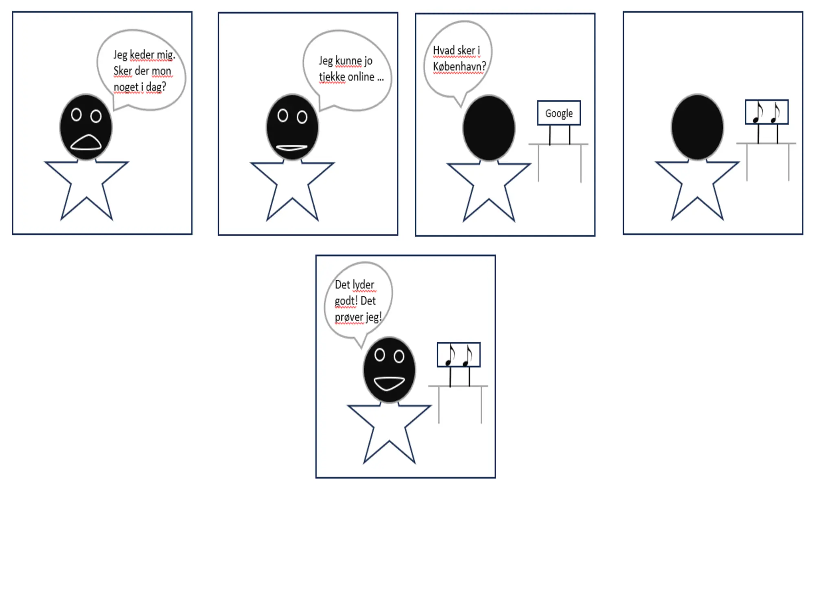
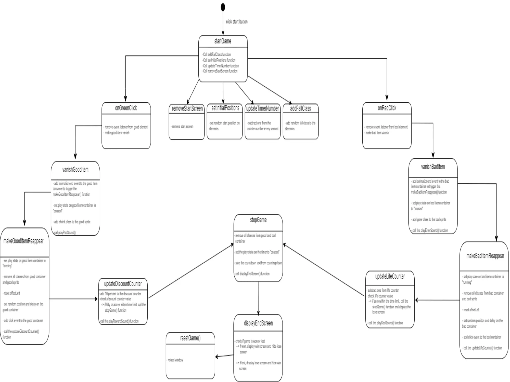
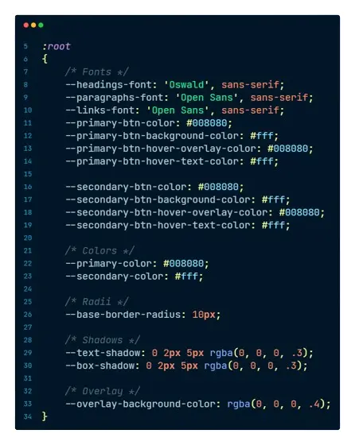

Tema #2 - Web
Introduktion til HTML & CSS, Grid, media queries og Flex samt afslutning med studiestartsprøve.
Kæledyrsøvelse

Visitkortøvelse
Tema #3 - UX/UI
Introduktion til procesdokumentation, researchtyper og prototyper i Figma. Herudover lærte vi om mere avancerede CSS-selektorer og lighthouse tests.

Style Tile
Moodboard

Storyboard
Website
Tema #4 - Animation
Introduktion til HTML & CSS, Grid, media queries og Flex samt afslutning med studiestartsprøve.

State Machine Diagram

Activity Diagram
Tema #5 - Indhold
Introduktion til Premiere Pro, Git, Github, Github Pages samt projektstyring med SCRUM og Trello boards. Derudover undervist i præsentationsteknikken Pecha Kucha samt CSS custom properties.

Trello Board
